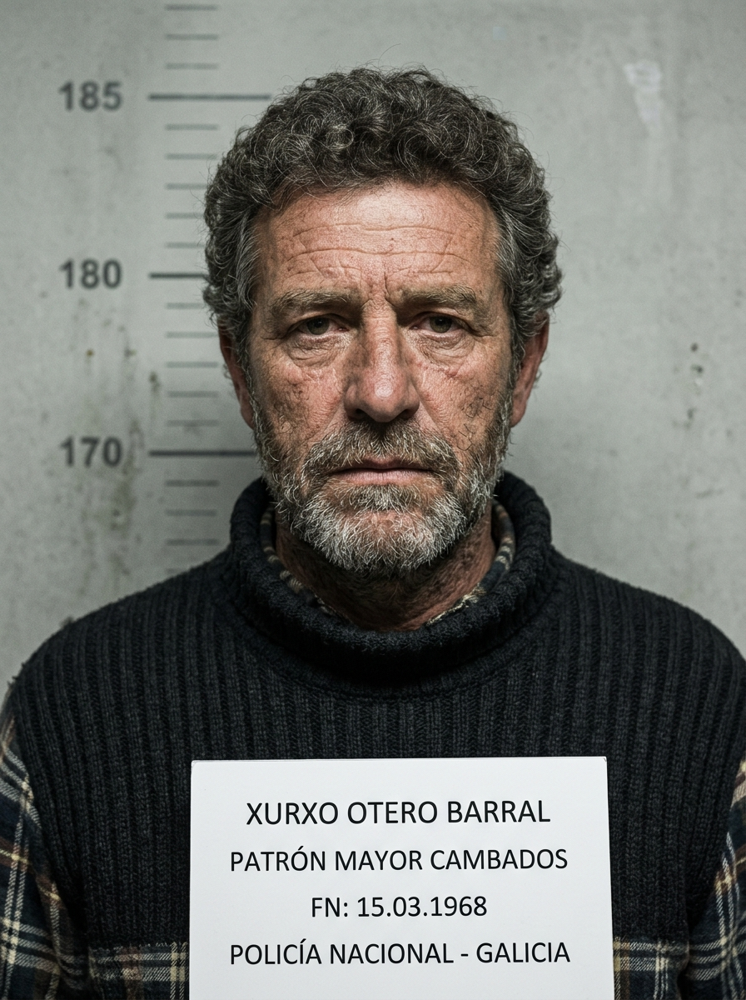
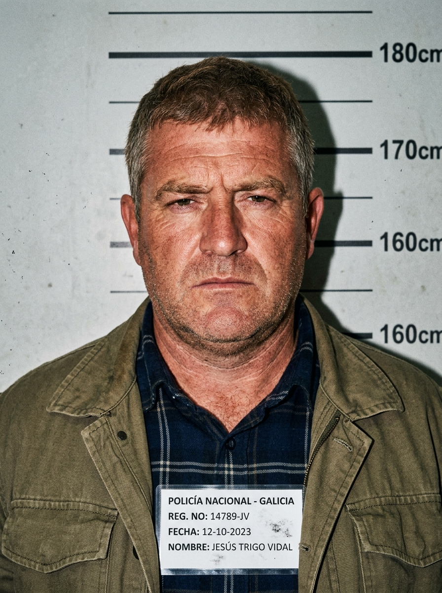
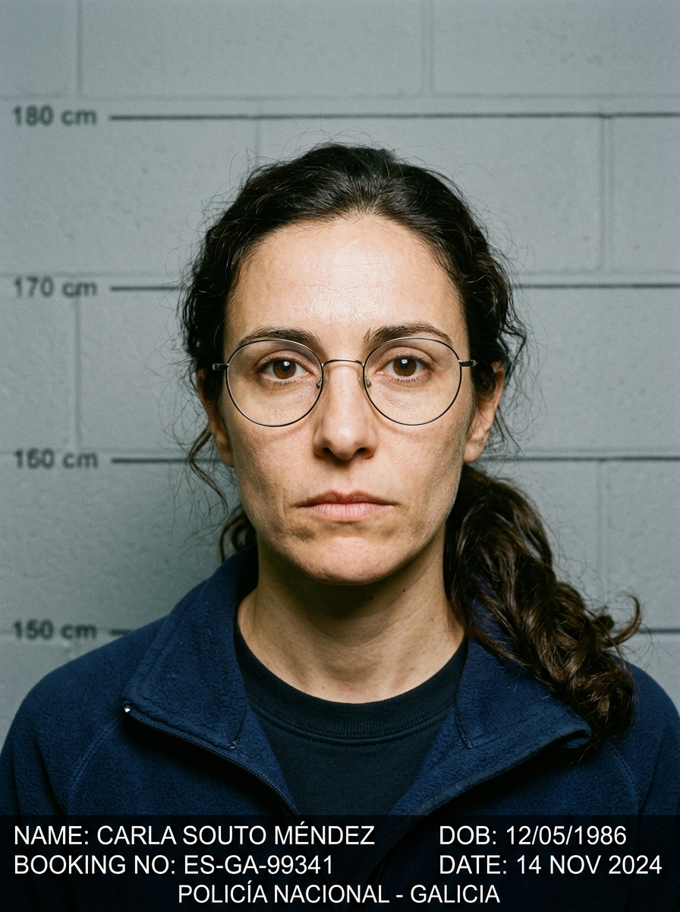
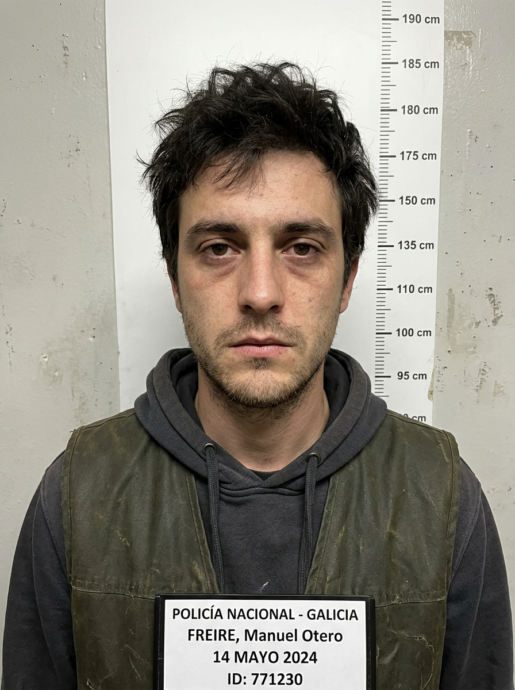
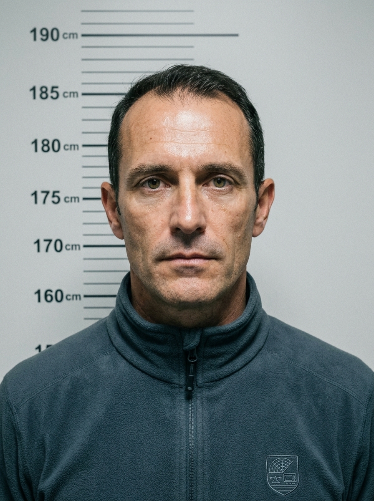

CAMBADOS / REDACCIÓN.— Conmoción absoluta en el muelle de Cambados y en el conjunto de las rías gallegas. D. Xurxo Otero Barral, de 56 años, histórico armador y Patrón Mayor de la Cofradía de San Antonio desde 2018, fue hallado sin vida a primera hora de esta mañana flotando entre las cuerdas de una batea de mejillón en el polígono Cambados B.
Fue la tripulación de un barco bateeiro la que dio la voz de alarma a las 07:18 horas tras percatarse de que el pesquero de Otero, el Novo Alborada, se encontraba al ralentí rozando contra la estructura de madera. Al aproximarse comprobaron que no había nadie en el timón y localizaron el cuerpo en el agua.
Hasta el lugar se desplazaron efectivos de Salvamento Marítimo, la patrullera Río Guadalete de la Guardia Civil y buzos del GEAS, que procedieron al rescate del cadáver y al remolque del pesquero a puerto. La autoridad judicial ordenó el traslado del cuerpo al Instituto de Medicina Legal de Santiago para la autopsia.
Aunque las primeras hipótesis apuntaban a una caída fortuita durante un golpe de mar nocturno, fuentes portuarias confirmaron que Xurxo Otero había mantenido en los últimos días tensas reuniones sobre las cuotas de marisqueo y las inspecciones de toxinas marinas.





| Evidencia | Ubicación | Descripción Pericial |
|---|---|---|
| Foto 1 | Batea B-12 | Novo Alborada al ralentí abarloado a la madera con testigo métrico #1. |
| Foto 2 | Laboratorio INTCF | Microscopía de médula ósea con ausencia total de diatomeas marinas. |
| Foto 3 | Amura de Estribor | Raspadura con transferencia de pintura roja antifouling y regla ABFO #3. |
| Foto 4 | Muelle de Tragove | Vista nocturna del varadero y taller mecánico con cámara CCTV. |
15/03/2025 - 08:45 h: El barco no tiene signos de vía de agua ni avería de motor. El ralentí suena redondo. ¿Por qué alguien se caería por la borda sin accionar el chaleco autohinchable y con las luces apagadas? No tiene sentido.
15/03/2025 - 12:15 h: Llamada del Dr. Seoane desde el IMELGA: «Xabier, este hombre no murió en el agua. El fémur está limpio de diatomeas y el golpe en la cabeza fue con una llave de tuercas, no con una madera». Aquí hay gato encerrado.
16/03/2025 - 10:30 h: El plotter Furuno marca una ruta imposible hacia mar abierto. Pero el informe de corrientes de MeteoGalicia dice que la marea lo habría echado fuera de la ría. Alguien puso el barco ahí aposta.
16/03/2025 - 19:40 h: El raspón de estribor tiene pintura roja con fluoropolímero. La misma que usa Brais en su taller para las planeadoras de asistencia rápida.